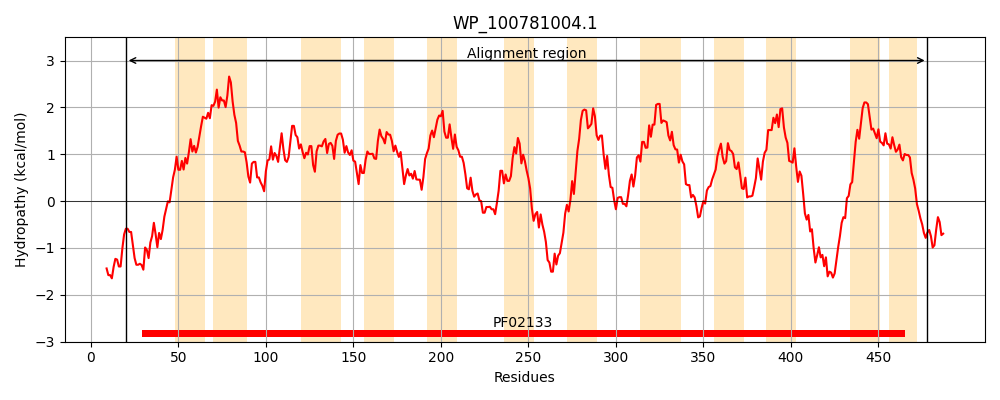
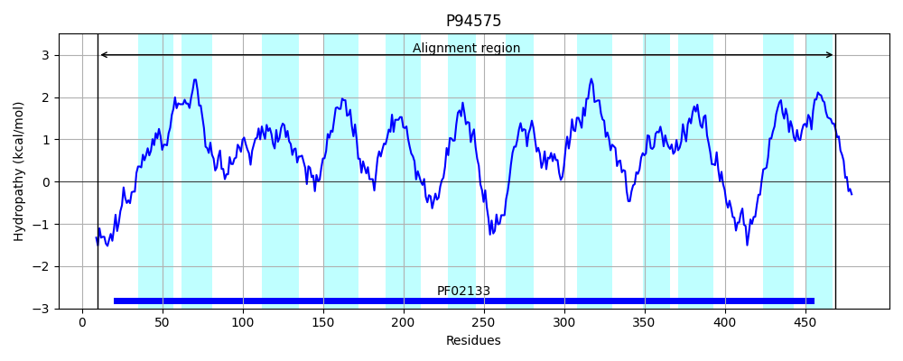
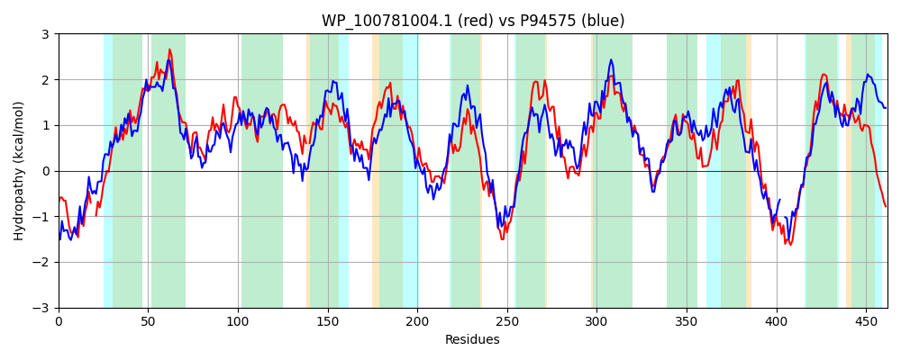

Hit Accession: P94575
Hit TCID: 2.A.39.3.4
Hit Description: gnl|BL_ORD_ID|11719 gnl|TC-DB|P94575|2.A.39.3.4 Hypothetical 54.0 kDa protein IN NRGA-USD intergenic region - Bacillus subtilis.
Mach Len: 462
e:0.000000
Query TMS Count : 12
Hit TMS Count: 12
TMS-Overlap Score: 9.950000
Predicted Substrates:CHEBI:2594;allantoin
BLAST Alignment:
Score: 777 , Bit scores: 303 bits, E-value: 5.7e-98, Alignment length: 462, Percentage identity: 33
Query: 20 SPRLCNEDLAPTRDQNWSW--YNIFSFWMSDVHSMGGYVVAASFFTLGLASWQVLLCLLVGICIVQLCANLVAKPSQMAGVPYAVICRQAFGVFGANIPAVIRGLIAFAWYGIQTYLAANALMLVLLKFWPSLASLTNS-SFLGLSTLGWLCFATMWLLQAMVFWHGMNAIKRFIDIAGPAVYVVMLALAGWIVYKTGLDGISFTLTSKSLSAGEQTWQMITATALVVSYFSGPLLNFGDFSRYGKSMGEIRRGNRWGLPFNFLLFSVVTVVIVSGTQSLFGKMITDPIETVSRVGNDLAVAIGLLTMITATIGINIVANFVSPAFDFSNCAPQKISFRTGGMIAAVGSILLTPWNLFNSPELIHYTLDVLGAFIGPLFGILIADFYLIKRGRVSVDDLFDDTPKGKYWYRNGFNPKAIAALLPSVGLGLIISFIPALHEVANFSWFIGVFLGATLYRWLAR 478
S RL NEDL P + +W N S WM +H++ Y +GL+ WQVL ++ I+ L G+P+ VI R ++G++GANIPA++R A W GIQT+ + AL ++LL WP + + LG+ G L F W + +V HGM +IKRF AGP VY+V + W V G G ++ K + E W ++ ++ +LN DF+R+ ++ E +G +GLP F LF+ ++ + SG+Q FG+ I D ++ ++R N + + ++T+ ATI +N+ AN VSPA+D +N P+ I+F+ G I A+ ++ PW L S ++ L ++G +GP+ G+++AD+++I++ +SVDDL+ +T G+Y Y G+N +A AA + + LI ++P L + + SWF+GV + Y L R
Sbjct: 10 SNRLSNEDLVPLGQEKRTWKAMNFASIWMGCIHNIPTYATVGGLIAIGLSPWQVLAIIITASLILFGALALNGHAGTKYGLPFPVIIRASYGIYGANIPALLRAFTAIMWLGIQTFAGSTALNILLLNMWPGWGEIGGEWNILGIHLSGLLSFVFFWAIHLLVLHHGMESIKRFEVWAGPLVYLVFGGMVWWAVDIAGGLGPIYSQPGKFHTFSETFWPFAAGVTGIIGIWATLILNIPDFTRFAETQKEQIKGQFYGLPGTFALFAFASITVTSGSQVAFGEPIWDVVDILARFDNPYVIVLSVITLCIATISVNVAANIVSPAYDIANALPKYINFKRGSFITALLALFTVPWKLMESATSVYAFLGLIGGMLGPVAGVMMADYFIIRKRELSVDDLYSET--GRYVYWKGYNYRAFAATMLGALISLIGMYVPVLKSLYDISWFVGVLISFLFYIVLMR 469 | Protein Hydropathy Plots: |
|---|
|  |  |
Pairwise Alignment-Hydropathy Plot:
|
|---|
|  |